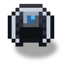
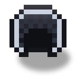

Casco de flujo solar
alaindustrial:fluxweave_solar_helmet
Resumen
El Casco de flujo solar es un Casco de flujo mejorado: lleva encima un pequeño panel solar de nivel 1. Mientras el casco está puesto y hay cielo abierto sobre la cabeza a la luz del día, genera EU/FE por sí mismo y los reparte a todo lo que lleva el jugador: primero a sí mismo, luego al resto de la armadura puesta, y después a las herramientas del inventario, la mano izquierda y la Mochila de energía.
En todo lo demás es un casco de flujo ordinario: el mismo búfer, respiración bajo el agua, velocidad de nado y defensa 2, y cuenta como el casco del set: el bono 4/4 funciona con él igual que con el normal. Los detalles del set completo están en la página Armadura de flujo.
La producción es pequeña y honesta: es una versión puesta del panel de nivel 1, no un móvil perpetuo. De noche, bajo techo o bajo el agua el casco no genera nada.
Energía
| Campo | Valor |
|---|---|
| Búfer (EU/FE) | 15,000 (igual que el Casco de flujo) |
| Entrada máxima (EU/FE/tick) | 32 (techo LV) |
| Mantenimiento pasivo | 1 EU/FE/segundo mientras el casco está puesto y cargado |
| Generación | hasta 8 EU/FE/segundo bajo un cielo diurno despejado |
| Coste del bono de set | 200 EU/FE por medio corazón de regeneración (sale de la carga del casco) |
8 EU/FE/s es cerca del 40 % de un panel de nivel 1 en el suelo (que da 1 EU/FE/tick, es decir, 20 EU/FE/s) y cubre de sobra el mantenimiento de 1 EU/FE/s de la propia armadura.
Cuándo genera el casco
Las reglas son las del panel de nivel 1 en el suelo. Solo genera el casco puesto; en el inventario no hace nada.
| Condición | Producción |
|---|---|
| Día despejado, cielo abierto sobre la cabeza, Overworld | 8 EU/FE/s |
| Noche | 0 |
| Techo sobre la cabeza, cueva | 0 |
| Cabeza bajo el agua | 0 |
| Nether, End y otras dimensiones sin cielo | 0 |
| Lluvia, tormenta | 0 |
| Nevada o capa de nieve | 2 EU/FE/s (un hilo débil, como el panel) |
| Hojas o telaraña sobre la cabeza | 4 EU/FE/s (la mitad) |
El casco arranca solo. La producción no depende de la carga del propio casco: un casco completamente descargado (0 EU/FE) empieza a funcionar al sol sin carga externa.
A dónde va la energía
Una vez por segundo, la energía generada se reparte en este orden:
- El propio casco, para que sus bonificaciones y su mantenimiento no parpadeen.
- El resto de la armadura puesta.
- El resto del inventario y la mano izquierda, a partes iguales y no «el primero de la lista»; el punto de inicio del recorrido rota. La Mochila de energía recibe energía en pie de igualdad con lo demás.
La energía nunca se crea de la nada: lo que llega a los objetos no supera la producción. Cuando todo el equipo está lleno, el exceso se pierde y los objetos no se reescriben (sin tráfico de sincronización de más).
Qué aporta el casco
Todo lo que aporta el Casco de flujo normal: respiración bajo el agua, +50 % de velocidad de nado y el pago del bono de set 4/4. Las bonificaciones son atributos y se aplican mientras el casco tiene carga.
Propiedades del objeto
| Campo | Valor |
|---|---|
| Defensa | 2 |
| Durabilidad | nunca se gasta (el desgaste se paga en EU/FE) |
| Encantamiento | sí, como armadura ordinaria; encantabilidad 18 |
| Reparación | tejido de flujo en un yunque |
| Barra del inventario | carga de EU/FE, en el color LV |
Apariencia
Parte del traje de tejido de flujo: sobre el casco hay un pequeño panel solar (celdas azules en un marco). La armadura puesta tiene dos capas, «cargada» y «agotada», como las demás piezas del set. El aspecto no cambia con el sol: una nube sobre la cabeza no recolorea la armadura.
Receta
Mesa de trabajo, receta con forma de dos filas: un panel solar de nivel 1 arriba en el centro, un casco de flujo ordinario debajo en el centro y un cable de cobre aislado a cada lado del casco. La carga del casco original pasa al resultado: la mejora no necesita recarga.
Descripción emergente
La descripción del objeto tiene dos líneas: «Panel solar: hasta N EU/FE/s bajo un cielo diurno despejado» (N sale de) y una nota de que de noche, bajo techo y bajo el agua el casco no genera nada.
Progresión
Nivel: LV
Requiere: el Casco de flujo y un panel solar de nivel 1, más dos cables de cobre aislados.
Siguiente: no hay variante nocturna: el casco se basa en el panel de nivel 1, no en el lunar.
Relacionado
Casco de flujo — el casco ordinario con el que se fabrica este
Armadura de flujo — el set completo y el bono 4/4
Panel solar — las reglas del cielo sobre las que se basa la producción
Mochila de energía — también recibe energía del casco
Fabricación
Fabricación con forma

▶
Casco de flujo solar